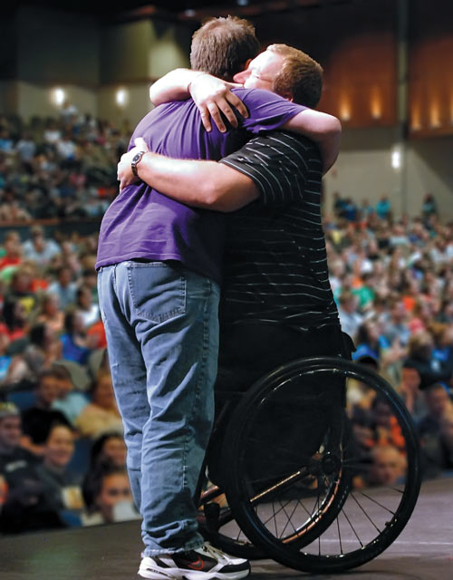

Diversity According to Family Guy and South Park
“Diversity According to Family Guy and South Park” uses clips from the television shows to illustrate three different diversity/ social justice issues in one program.
In the presentation Matt covers ableism, which is discrimination toward people with a disability. He addresses the hardships of trying to overcome physical disabilities and the additional challenges hidden disabilities pose, such as anxiety, depression, and mental health. In explaining lookism, he describes how people in the US undermine themselves by not conforming to the stereotypical image of beauty. Finally, Matt teaches everyone how to conduct an upstander intervention and explains why people within a minority group might be allowed to say certain words.
Arrange a Presentation Civility Speaker
